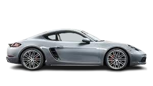

Ferdinand Porsche

The Founder of Porsches
Early Life


Ferdinand Porsche was born on September 3, 1875, in Maffersdorf, Bohemia (now Vratislavice nad Nisou, Czech Republic), which was part of Austria-Hungary at the time. From a young age, he was fascinated by electricity. During the day, he helped his father, who worked as a panel-beater, and at night, he took classes at the Imperial Polytechnical College in Reichenberg (now Liberec). In 1893, at just 18, he moved to Vienna to work for Béla Egger & Co., an electrical company later known as Brown Boveri (now ABB). At the same time, he studied part-time at what is now the Vienna University of Technology, although he never earned a formal degree. Porsche quickly impressed his supervisors with his skills and was promoted to a management role. In 1897, he built and raced an electric wheel-hub motor, using a concept created earlier by American inventor Wellington Adams. That same year, he joined the electric car department at Hofwagenfabrik Jacob Lohner & Co. By 1898, he built the Egger-Lohner electric vehicle, also called the P1—one of the first electric cars ever made. His work got global attention in 1900 when his motor powered the Lohner-Porsche car at the Paris World’s Fair. He later won a race with it at the Semmering circuit near Vienna. In 1902, Porsche served in the Austro-Hungarian Army, where he became a driver for Archduke Franz Ferdinand. After almost eight years with Lohner, he moved on to become the technical manager at Austro-Daimler in 1906. In 1923, he joined Daimler-Motoren-Gesellschaft in Stuttgart, where he helped develop the Mercedes compressor car. For his achievements, Porsche was awarded an honorary doctorate in 1917 and later received the German National Prize for Art and Science in 1937.